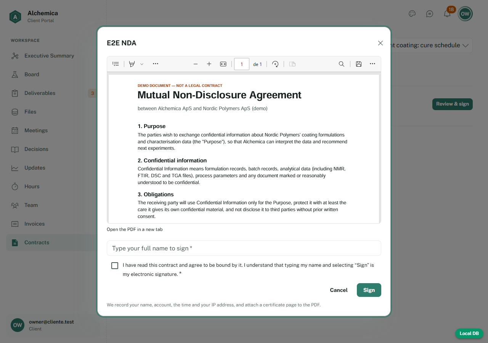
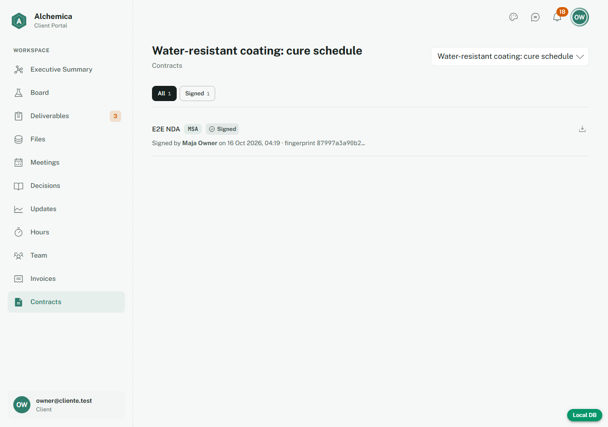
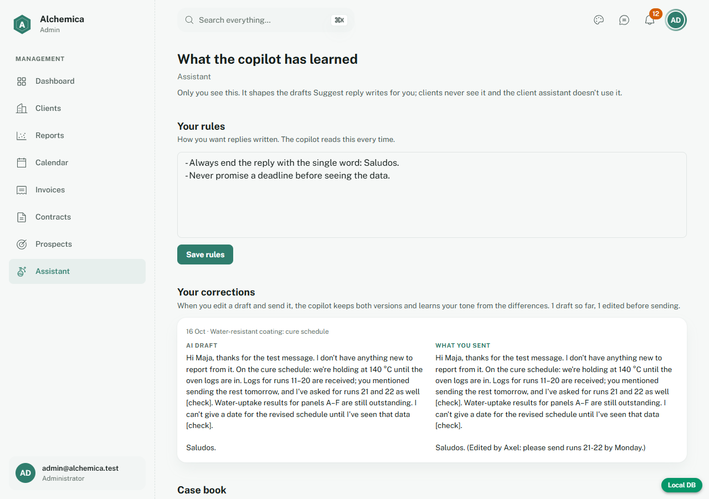

Un recorrido paso a paso, con el resultado esperado de cada paso y una casilla para marcar si pasó. Pensado para ensayar la demo antes de mostrársela a Axel.
Cuánto tardaUna hora completo. El guion de demo de 10 minutos está en la última sección.
Qué hay de nuevo en esta versiónChat en la burbuja de abajo a la derecha, calendario del admin, tres clientes de demostración, menús desplegables propios, indicadores de carga y la corrección de seguridad del rol de administrador.
Cómo marcarCada prueba tiene ☐ ✔ ✘: marca ✔ si el resultado esperado ocurrió y ✘ si no, y anota qué viste en el margen. Los textos de pantalla están en inglés porque el portal lo está.
Se prueba con los clientes demo "Nordic Polymers", "Fjordline Packaging" y "Baltic BioCoat". Los datos y las cuentas son de ejemplo, no reales.
Antes de empezar
Preparación
1 · Que todo esté encendido
Docker Desktop abierto y Supabase local arriba: npx supabase start.
El servidor de la app: npm run dev (queda en http://localhost:3000).
Para la IA: en .env.local están AI_ENABLED=true y tu clave en AI_API_KEY=. Si cambiaste algo, reinicia el servidor.
2 · Dos sesiones a la vez
El navegador guarda la sesión por dirección, así que puedes ser administrador y cliente al mismo tiempo en dos pestañas:
Quién
Dirección
Cuenta
Rol
Axel (admin)
http://localhost:3000
admin@alchemica.test
Administrador
Maja (cliente)
http://127.0.0.1:3000
owner@cliente.test
Dueña del workspace: ve todo, incluido contratos y facturas
Lars (cliente)
http://127.0.0.1:3000
colab@cliente.test
Colaborador: no ve contratos ni facturas
Henrik (cliente 2)
http://127.0.0.1:3000 en otra ventana privada
owner@fjordline.test
Dueño de Fjordline Packaging
Ieva (cliente 3)
http://127.0.0.1:3000 en otra ventana privada
owner@balticbiocoat.test
Dueña de Baltic BioCoat
Una misma dirección guarda una sola sesión: para Henrik e Ieva usa una ventana privada (o otro navegador).
3 · Cómo entrar (sin contraseña)
Abre /login en la dirección de esa persona y escribe su correo; pulsa Send magic link.
El correo llega a la bandeja de pruebas: http://localhost:54324 (Mailpit). Abre el último mensaje y pulsa el enlace.
Pulsa Finish signing in.
Ojo: abre la bandeja de pruebas en una pestaña distinta a la del cliente. Si la abres en la misma pestaña y dirección, puede cerrarse su sesión.
Si algo se ve raro tras cambiar código: detén el servidor, borra la carpeta .next y vuelve a levantarlo. Es un problema conocido del entorno de desarrollo, no de la app.
Prueba 1
Contratos: firmar dentro del portal
Es lo que Axel pidió ver. Hay un contrato esperando la firma de Maja y otro ya firmado como ejemplo.
#
Pasos
Resultado esperado
OK
1.1
Maja: menú Contracts.
Ve Services agreement — ready for your signature con estado Sent y el texto "Waiting for your signature".
☐ ✔ ✘
1.2
Pulsa Review & sign.
Se abre una ventana con el PDF a la vista, un campo "Type your full name" y la casilla de aceptación.
☐ ✔ ✘
1.3
Escribe Maja Owner y pulsa Signsin marcar la casilla.
No firma: el navegador pide marcar la casilla.
☐ ✔ ✘
1.4
Marca la casilla y pulsa Sign.
La ventana se cierra y el contrato pasa a Signed, con "Signed by Maja Owner on …" y una huella (fingerprint).
☐ ✔ ✘
1.5
Pulsa el ícono de descarga y abre el PDF.
Tiene una página extra de certificado: firmante, cuenta, fecha en UTC, IP y la huella SHA-256 del original.
☐ ✔ ✘
1.6
Axel: proyecto Water-resistant coating → More → Contracts.
Ve el mismo contrato firmado y su huella. Le llegó una notificación en la campana.
☐ ✔ ✘
1.7
Axel: crea otro: escribe un título, elige el tipo, Create. En el formulario que aparece deja Sign in the portal, adjunta docs/guide/sample-contract-demo.pdf y pulsa Send for signature.
Mensaje verde "Sent…". El contrato queda Sent con "Waiting for the client's workspace owner…".
☐ ✔ ✘
1.8
Lars (colaborador): menú Contracts.
Ve "Owner-only": un colaborador no puede ver ni firmar contratos.
☐ ✔ ✘

Maja revisa el PDF y firma con su nombre.

El contrato queda firmado, con firmante, fecha y huella.
Qué es esta firma: una firma electrónica simple (nombre escrito + confirmación + certificado con fecha, IP y huella del documento). Sirve como prueba en la mayoría de contratos comerciales en la UE y Dinamarca, pero es más débil que una firma avanzada o cualificada (MitID, o la firma avanzada de Documenso). Si un contrato exige ese nivel, hay que usar esa vía: en el formulario existe la opción Send by email (Documenso), que necesita una cuenta y DOCUMENSO_API_KEY.
Prueba 2
Resumen del cliente: qué necesita de mí y dónde vamos
#
Pasos
Resultado esperado
OK
2.1
Maja:Executive Summary.
La tarjeta de arriba dice la etapa actual ("Now: Preliminary experiments") y cuántas cosas esperan a la clienta.
☐ ✔ ✘
2.2
Mira Waiting on you.
Lista con un botón por fila (Answer, Review, Upload, Sign, Open). Lo vencido dice Overdue.
☐ ✔ ✘
2.3
En el Timeline, pulsa la etapa Preliminary experiments.
Se abre con fechas y avance, un estado tipo On track, la descripción y los entregables, reuniones y pedidos de datos de esa etapa.
☐ ✔ ✘
2.4
Con el teclado: Tab hasta una etapa y Enter.
Se abre igual; abrir otra cierra la anterior.
☐ ✔ ✘
2.5
Pasa el mouse sobre una etiqueta (FTIR, NMR…) en Files.
Aparece en la lista como pendiente y a Maja le llega una notificación.
☐ ✔ ✘
3.2
Maja:Files → en ese pedido, elige un archivo y Send.
El pedido pasa a Received, el archivo queda en la carpeta correcta con la etiqueta, y Axel recibe aviso.
☐ ✔ ✘
3.3
Axel: en un archivo, pulsa su etiqueta (o Add label).
Menú con técnicas y tipos de documento, cada uno explicado. Al elegir, la etiqueta cambia.
☐ ✔ ✘
3.4
Axel: menú ⋯ de un archivo → Move to folder.
El archivo cambia de carpeta y deja de verse en la actual.
☐ ✔ ✘
Prueba 4
Chat entre cliente y Axel
#
Pasos
Resultado esperado
OK
4.1
Axel: la burbuja redonda abajo a la derecha.
Se abre una ventana de chat encima de la burbuja con la lista de conversaciones por cliente (ahora también Fjordline y Baltic BioCoat); la página de atrás sigue usable.
☐ ✔ ✘
4.2
Abre la de Nordic Polymers, escribe un mensaje y pulsa Enter.
Aparece en la conversación. En la otra pestaña, la burbuja de Maja muestra un contador y la campana sube, sin recargar.
☐ ✔ ✘
4.3
Maja: abre el chat y responde (prueba también adjuntar un archivo con el clip).
La respuesta llega al panel abierto de Axel en vivo. El adjunto queda en Files › Chat attachments.
☐ ✔ ✘
4.4
Axel: menú ⋮ de un mensaje → Log as decision y luego Add to board.
Se crea la decisión y una tarjeta en la primera columna del board; queda una nota en el chat.
☐ ✔ ✘
4.5
Abre /portal?chat=20000000-0000-0000-0000-000000000002 como Maja.
La ventana de chat se abre sola en esa conversación.
☐ ✔ ✘
4.6
Con el chat abierto, pulsa Esc; luego vuelve a abrirlo y pulsa la burbuja (ahora una ✕).
Las dos formas cierran la ventana.
☐ ✔ ✘
4.7
Achica la ventana a tamaño celular y abre el chat.
Ocupa toda la pantalla, la burbuja se esconde y arriba hay una ✕ para cerrar.
Cada etapa tiene nombre, porcentaje, fechas y "What happens in this stage".
☐ ✔ ✘
5.2
Cambia el % de una etapa y la descripción de otra; sal del campo.
Se guarda solo; el avance total del proyecto se recalcula. Maja lo ve en su resumen y recibe una notificación.
☐ ✔ ✘
5.3
En Deliverables, mueve una entrega a Awaiting client. Luego Maja entra a Deliverables y la aprueba con Approve.
Maja la ve como Awaiting your review; al aprobar cambia a Approved y Axel recibe aviso.
☐ ✔ ✘
Prueba 6
El copiloto de IA (solo admin)
Solo Axel lo usa; los clientes no tienen IA. Necesita tu clave en .env.local. Los datos viajan a DeepSeek: úsalo solo con datos demo.
#
Pasos
Resultado esperado
OK
6.1
Axel: burbuja de chat → una conversación con un mensaje del cliente → Suggest reply.
Aparece un borrador en la caja. No se envía hasta que pulses Send.
☐ ✔ ✘
6.2
Axel: edita el borrador y envíalo. Abre el menú Assistant.
En Your corrections aparecen el borrador de la IA y lo que enviaste.
☐ ✔ ✘
6.3
En Your rules escribe una regla ("Siempre termina con 'Saludos'"), guarda, y pide otro borrador.
El nuevo borrador cumple la regla.
☐ ✔ ✘
6.4
En Case book: elige un proyecto, Draft with AI, revisa y Save.
El borrador no trae nombres de cliente ni de personas; queda guardado en la lista.
☐ ✔ ✘
6.5
Maja: abre su chat.
Solo está la conversación con Axel: no hay pestaña de IA ni botón Suggest reply.
☐ ✔ ✘

Reglas y correcciones: lo que el copiloto aprende de Axel.Un caso redactado sin nombres, para que Axel lo revise.
Prueba 7
Seguridad básica
#
Pasos
Resultado esperado
OK
7.1
Maja: abre http://127.0.0.1:3000/admin.
No entra al admin: la devuelven a su portal.
☐ ✔ ✘
7.2
Lars (colaborador): intenta abrir Invoices y Contracts.
Muestra "Owner-only"; no ve importes ni contratos.
☐ ✔ ✘
7.3
Maja: busca en su portal algo de otro cliente o proyecto.
Solo ve su organización.
☐ ✔ ✘
7.4
Maja: mira si tiene el menú Assistant o alguna IA.
No existe para ella: la IA es solo del admin.
☐ ✔ ✘
7.5
Henrik (Fjordline): revisa Board, Files, Deliverables y el chat.
Solo ve su proyecto Odour from recycled HDPE bottles; nada de Nordic Polymers ni Baltic BioCoat.
☐ ✔ ✘
7.6
Desarrollador: intenta que un cliente se haga administrador (comando abajo).
La base de datos lo rechaza con Only Alchemica can change platform roles.
☐ ✔ ✘
docker exec -i supabase_db_alchemica psql -U postgres -c "begin; set local role authenticated; select set_config('request.jwt.claims','{\"sub\":\"00000000-0000-0000-0000-0000000000c1\",\"role\":\"authenticated\"}',true); update profiles set platform_role='axel_admin' where id='00000000-0000-0000-0000-0000000000c1'; rollback;"
Prueba 8
Detalles que suman
#
Pasos
Resultado esperado
OK
8.1
Cualquiera: ícono de paleta de la barra → elige otro color.
Todo el portal cambia de color y se mantiene al recargar; no afecta a la otra persona.
☐ ✔ ✘
8.2
Reduce la ventana al tamaño de un celular.
El menú pasa a un botón ☰, el chat ocupa toda la pantalla y nada se sale de la pantalla.
☐ ✔ ✘
8.3
Axel: abre /admin/digest-preview.
Muestra el resumen semanal que recibiría cada cliente (no envía nada).
☐ ✔ ✘
8.4
Maja:Team → interruptor "Email me a weekly summary".
Se puede apagar y encender; apagado, deja de recibir el correo de los lunes.
☐ ✔ ✘
8.5
Pasa de una página a otra del menú lateral.
Mientras carga aparece una barra fina arriba, que desaparece al llegar.
☐ ✔ ✘
8.6
Guarda algo (por ejemplo, Create en Contracts o Save en una reunión).
El botón muestra un círculo girando y no se puede pulsar dos veces.
☐ ✔ ✘
8.7
Abre cualquier desplegable (estado de una reunión, tipo de contrato) y muévete con ↑↓Enter.
Es el menú propio del portal (no el del navegador), se ve bien en modo oscuro y funciona con teclado.
☐ ✔ ✘
8.8
Axel: proyecto → Hours. Luego, en tamaño celular, Files.
Hours abre sin error; Files no se desplaza hacia los lados (la tabla se desliza por dentro).
☐ ✔ ✘
Prueba 9
Calendario (admin)
Reuniones, entregas, pedidos de datos, etapas, tarjetas y facturas de todos los clientes en un solo lugar. Las horas son de Copenhague.
#
Pasos
Resultado esperado
OK
9.1
Axel: menú Calendar.
Vista Month del mes actual con eventos de los tres clientes; hoy marcado; a la derecha un calendario pequeño con puntos en los días con algo.
☐ ✔ ✘
9.2
Pulsa ‹ y ›, luego Today.
Cambia de mes y vuelve al actual. La dirección guarda la vista (se puede compartir el enlace).
☐ ✔ ✘
9.3
Cambia a Week y luego a Agenda.
Week: horario con las reuniones en su hora y lo de todo el día arriba. Agenda: lista día por día.
☐ ✔ ✘
9.4
Pulsa un evento (por ejemplo una reunión).
Se abre una ficha con hora, cliente y proyecto, estado, Join (si tiene enlace) y Open, que lleva a su página.
☐ ✔ ✘
9.5
Pulsa los filtros de arriba (Meetings, Deliverables…) para apagar uno.
Ese tipo desaparece del calendario; al volver a pulsar reaparece.
☐ ✔ ✘
9.6
En el calendario pequeño, pulsa otro día.
La vista salta a esa fecha.
☐ ✔ ✘
9.7
Un día con muchas cosas: pulsa +N more.
Se abre la lista completa de ese día.
☐ ✔ ✘
9.8
En un proyecto → Meetings, programa una reunión a las 10:00.
En el calendario aparece a las 10:00 (hora de Copenhague), no corrida.
☐ ✔ ✘
9.9
Achica a tamaño celular.
Cualquier vista se muestra como agenda, sin desplazarse hacia los lados.
☐ ✔ ✘
Prueba 10
Clientes de demostración
#
Pasos
Resultado esperado
OK
10.1
Axel: menú Clients.
Aparecen Nordic Polymers, Fjordline Packaging y Baltic BioCoat, cada uno con su avance.
☐ ✔ ✘
10.2
Maja: el selector de proyecto.
Tiene tres proyectos; Adhesion on recycled PET film recién empieza (etapa Onboarding).
☐ ✔ ✘
10.3
Henrik: entra y mira su resumen y Deliverables.
Proyecto a mitad de camino; la nota Interim note: 2-MIB traced… espera su revisión.
☐ ✔ ✘
10.4
Ieva: entra y mira su resumen, Contracts e Invoices.
Proyecto casi terminado (~93 %): informe final en revisión, contratos firmados, una factura pagada y otra enviada.
☐ ✔ ✘
Para recrearlos (por ejemplo después de probar): docker exec -i supabase_db_alchemica psql -U postgres < supabase/seed-showcase.sql. Borra y vuelve a crear solo esos datos; también se cargan solos con npm run db:reset.
Para mañana
Guion de demo (10 minutos)
Un orden que cuenta una historia: primero lo que ve el cliente, luego lo que hace Axel, y cierra con lo que le ahorra tiempo.
Min
Qué mostrar
Qué decir
0–2
Maja: Executive Summary, Waiting on you y el timeline con una etapa abierta.
"El cliente entiende en 10 segundos dónde estamos y qué le toca a él, sin términos técnicos."
2–4
Maja: Contracts → Review & sign → firmar. Descarga el PDF y enseña la página del certificado.
"Firma dentro del portal, sin cuentas externas. Queda un certificado con quién, cuándo y la huella del documento."
4–6
Maja abre la burbuja de abajo a la derecha y pregunta; Axel responde en vivo. Axel pasa un mensaje a Log as decision.
"Nada se pierde en correos: lo acordado queda como decisión."
6–8
Axel:Suggest reply, edita y envía; abre Assistant y enseña las reglas, las correcciones y el caso anonimizado.
"El copiloto aprende cómo escribe Axel. Siempre propone, nunca envía solo, y es solo suyo."
8–9
Axel:Clients con los tres clientes y el Calendar del mes; abre un evento.
"Todos los clientes y todas las fechas en una sola vista; nada se esconde en un proyecto olvidado."
9–10
Axel: Progress & stages (fechas y descripción), pedido de datos, y el cambio de color.
"Axel configura el proyecto en un par de clics y el cliente lo ve al instante."
Antes de entrar a la sala
Docker, Supabase y npm run dev funcionando; las dos sesiones (Axel y Maja) ya iniciadas.
El contrato Services agreement — ready for your signature sigue esperando firma (si lo firmaste en el ensayo, crea otro con el paso 1.7).
Tu clave de IA puesta en .env.local (para el copiloto de Axel).
Los tres clientes demo cargados (Prueba 10). Si ensayaste mucho, recréalos con el comando del recuadro.
Cierra pestañas con datos que no quieras mostrar.
Lo que conviene decir con honestidad
La firma del portal es una firma electrónica simple. Para contratos que exijan más (MitID, firma avanzada) se usa Documenso, que se conecta con una clave.
La IA (solo para Axel) usa hoy la API de DeepSeek, que procesa datos fuera de la UE: con clientes reales hay que moverla a un proveedor europeo con contrato de datos. Los clientes no usan IA.
Esto corre en un entorno local de pruebas; para producción hace falta publicar la base de datos y configurar los servicios (correo, firma, IA) en la UE.
Próximo paso: sincronizar en ambos sentidos con Google Calendar (las reuniones del portal llegan a su calendario e invitan al cliente). Está diseñado y avanzado; falta crear el proyecto de Google de Alchemica con él.
Seguridad: el problema por el que un usuario podía darse el rol de administrador ya está corregido (migración 0028_protect_platform_role.sql); se comprueba en el paso 7.6.